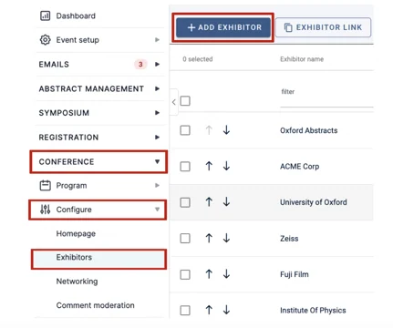
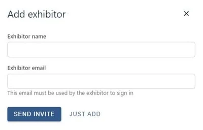
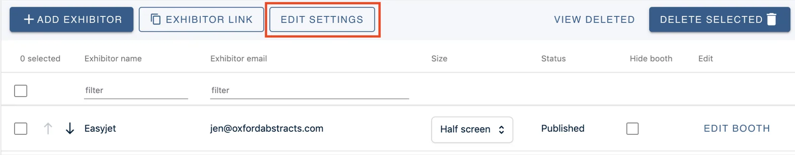
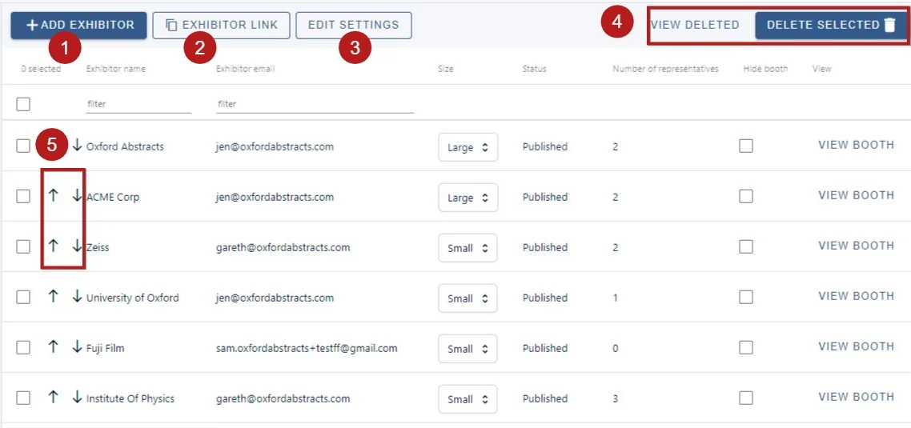
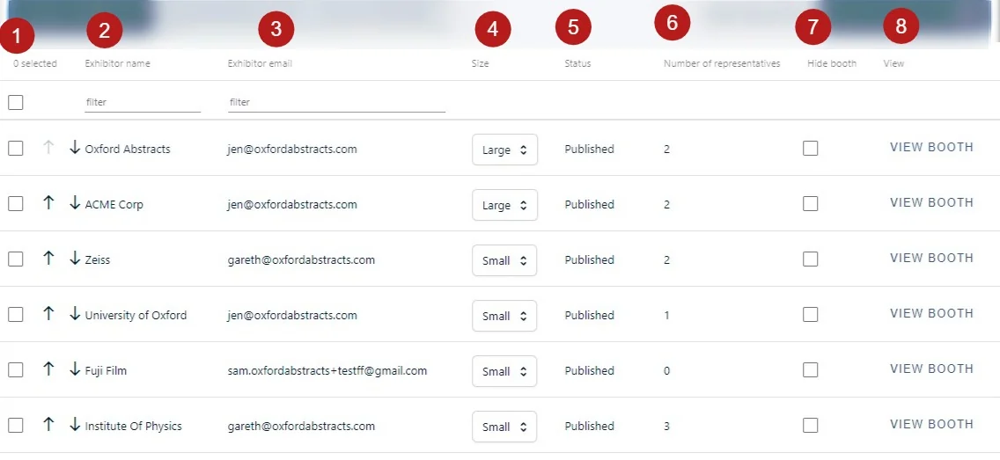
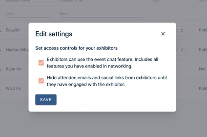
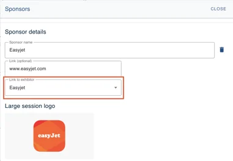
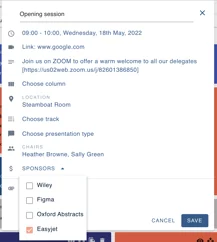
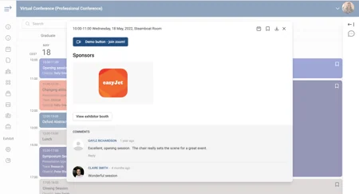

Professional Conference - exhibitor space - admin set up
For event organisersNot an organiser?
In this article learn how, as an event admin, you can add exhibitors and give them access to set up their booth.
This feature allows you to create exhibitor booths in your conference and facilitate interaction between attendees and exhibitors. In this article learn how, as an event admin, you can add exhibitors and give them access to set up their booth.#
Admins have permission to access many of the features that the exhibitors use, so it will be helpful to learn how to edit the booth and understand the end user experience by reading this article.
Adding your exhibitors#
Go to Event dashboard → Conference → Configure → Exhibitors
To add your exhibitors to your conference, click the Add Exhibitor button

Then, enter the name of the company exhibiting and the primary email for the exhibitor. You can then choose to send an invite to the exhibitor, or just add the details without sending an invite.
NB : The email you add here will need to be used by the exhibitor to login to your event

Once you add the exhibitor, they will appear on the table and they can be invited to create their booth.
For guidance on emailing exhibitors, see Creating custom emails
Exhibitor settings#
Go to Event dashboard → Exhibitors
You can adjust the controls your exhibitors have via the Edit Settings button.

Exhibitor table#
Go to Event dashboard → Exhibitors
From the table you can access lots of information and complete several actions:
1) Add exhibitor (as above)
2) Copy and paste the Exhibitor sign up link (You can send this out to Exhibitors using the Email function)
3) Edit settings. Clicking on this allows you to control the interactivity between exhibitors and attendees.
-
Delete / restore exhibitors (To delete, see below)
-
Change the order of exhibitors

On the main body of the table, you can
- Use the checkbox to select an entry (clicking the checkbox in the header will select all the rows on the page). You can then delete the entry via the Delete selected button
2) and 3). View exhibitors' names and emails.
4) Adjust the size of the booth
5) See the status of the booth, updated by the exhibitors
6) View the number of representatives
7) Hide a booth from being seen by attendees.
8) View the booth (this will take you to the booth view in the program, where you can edit it should you require)

The 'teaser page' is a preview screen showcasing all your exhibitors for attendees to browse. You can learn more in this set up article
Settings#
The gives you two options:
-
Allowing exhibitors to use the chat functionality in your event. The attendee will always have to ‘accept’ the chat if the exhibitor makes first contact. If this isn’t checked they won’t see the chat feature at all. (See Professional Conference - Chat feature for guidance on setting up this feature.)
-
Hiding your attendees' information until they've made first contact with the exhibitor

Using exhibitors as session sponsors#
Go to:
Event dashboard → Program Builder → Settings → Sponsors
When you add your sponsors you can link them directly to an existing exhibitor.
For guidance on setting up sponsors, see Professional Conference - Sponsors

Then, when you select your session sponsors, if they have a corresponding exhibitor booth, a link will show in the session for attendees to view the booth.


Read how exhibitors configure their booth and the end user experience here.
Common questions#
How do I set up exhibitors and sponsors?#
See Sponsors and Exhibitor Space.
There is also guidance on setting up exhibitor booths for your sponsors.
Didn't solve it? Ask our support team
No question is too small, and there's no charge for asking. Raise a ticket and someone who knows the software will pick it up.
Did this page solve it?
Thanks — this helps us fix it.